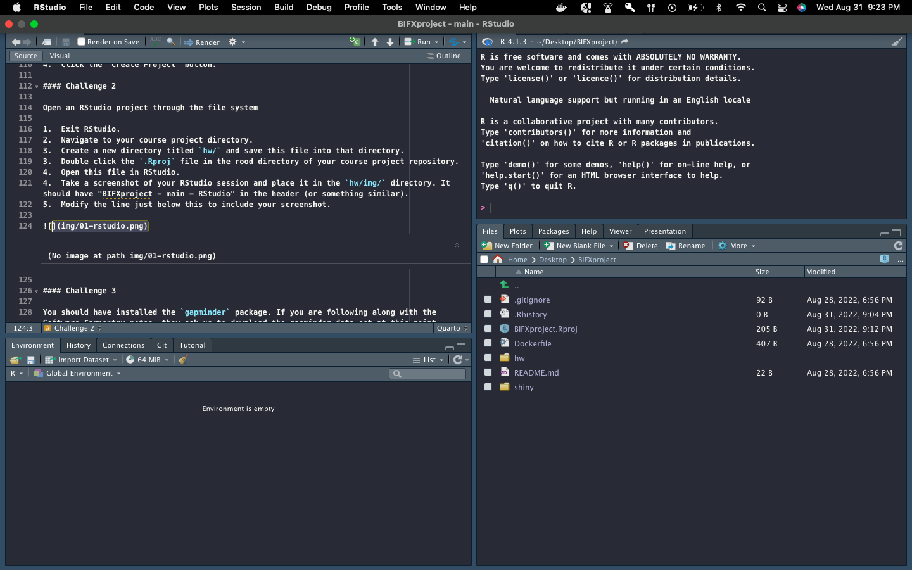

mass <- 47.5
age <- 122
mass <- mass * 2.3
mass[1] 109.25age <- age - 20
age[1] 102Fill out this Quarto document while completing the R Intro lesson.
<- to assign values to variables.ls() to list the variables in a program.rm() to delete objects in a script.install.packages() to install packages and library() to load them.Which of the following are valid R variable names?
min_height
max.height
_age
.mass
MaxLength
min-length
2widths
celsius2kelvinWhat will be the value of each variable after each statement in the following program?
mass <- 47.5
age <- 122
mass <- mass * 2.3
mass[1] 109.25age <- age - 20
age[1] 102Run the code from the previous challenge, and write a command to compare mass to age. Is mass larger than age?
# comparison code goes here
mass > age[1] TRUEClean up your working environment by deleting the mass and age variables.
# code goes here
rm(mass, age)Install the following packages: ggplot2, dplyr, gapminder
# this will fail if the required packages are not installed
library(ggplot2)
library(dplyr)
Attaching package: 'dplyr'The following objects are masked from 'package:stats':
filter, lagThe following objects are masked from 'package:base':
intersect, setdiff, setequal, unionlibrary(gapminder)Create a self-contained project
We’re going to turn our course project into a project in RStudio:
Open an RStudio project through the file system
hw/ and save this file into that directory..Rproj file in the rood directory of your course project repository.hw/img/ directory. It should have “BIFXproject - main - RStudio” in the header (or something similar).
You should have installed the gapminder package. If you are following along with the Software Carpentry notes, they ask us to download the gapminder data set at this point. Instead, we’ll load it directly from the gapminder package (i.e. you get this challenge for free).
library(gapminder)
data(gapminder)
# let's take a look at the data we'll be working with
gapminder# A tibble: 1,704 × 6
country continent year lifeExp pop gdpPercap
<fct> <fct> <int> <dbl> <int> <dbl>
1 Afghanistan Asia 1952 28.8 8425333 779.
2 Afghanistan Asia 1957 30.3 9240934 821.
3 Afghanistan Asia 1962 32.0 10267083 853.
4 Afghanistan Asia 1967 34.0 11537966 836.
5 Afghanistan Asia 1972 36.1 13079460 740.
6 Afghanistan Asia 1977 38.4 14880372 786.
7 Afghanistan Asia 1982 39.9 12881816 978.
8 Afghanistan Asia 1987 40.8 13867957 852.
9 Afghanistan Asia 1992 41.7 16317921 649.
10 Afghanistan Asia 1997 41.8 22227415 635.
# … with 1,694 more rowsUse help() or ? to get help in R.
Look at the help page for c. What kind of vector do you expect will be created if you evaluate the following?
c(1, 2, 3)[1] 1 2 3c('d', 'e', 'f')[1] "d" "e" "f"c(1, 2, 'f')[1] "1" "2" "f"Look at the help for the paste function. You will need to use it later. What’s the difference between the sep and collapse arguments?
Use help to find a function (and its associated parameters) that you could use to load data from a tabular file in which columns are delimited with “ (tab) and the decimal point is a “.” (period). This check for decimal separator is important, especially if you are working with international colleagues, because different countries have different conventions for the decimal point (i.e. comma vs period).
Use ??"read table" to look up functions related to reading in tabular data.